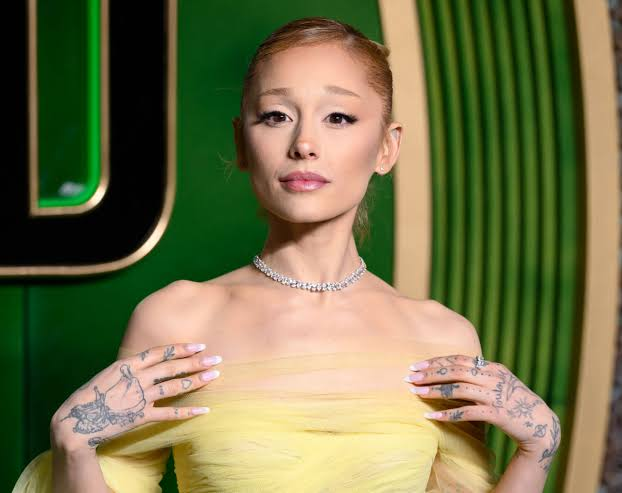

Discover music, movies and books!

Ariana Grande is an American singer, songwriter, and actress. She was born on June 26, 1993, in Boca Raton, Florida. She is one of the most popular pop artists in the world. She became famous for her powerful voice, impressive high notes, and unique musical style. Some of her most popular songs are Thank U, Next, 7 Rings, Into You, Positions, and We Can't Be Friends. Ariana has won several music awards and has millions of fans around the world. She is also known for her role as Glinda in the movie Wicked. Why people love her: Her beautiful voice, emotional songs, and unique personality make her special in the music industry.

Dua Lipa became popular with her unique voice, energetic performances, and catchy pop songs. Some of her most popular songs are New Rules, Levitating, Don't Start Now, Dance The Night, and Houdini. She has won many music awards, including Grammy Awards. Her music combines pop, dance, and disco influences. Why people love her: Her powerful voice, amazing style, and dance music make her a favorite artist for millions of people.

Justin Bieber is a Canadian singer and songwriter. He was born on March 1, 1994, in London, Ontario, Canada. He became famous at a young age after his songs gained popularity on YouTube. Justin Bieber is known for his unique voice and popular pop and R&B music. Some of his most famous songs are Baby, Sorry, Love Yourself, Peaches, and Ghost. Throughout his career, he has won many music awards, including Grammy Awards. He has millions of fans around the world. Why people love him: His beautiful voice, emotional songs, and different music styles make him one of the most recognizable pop artists.